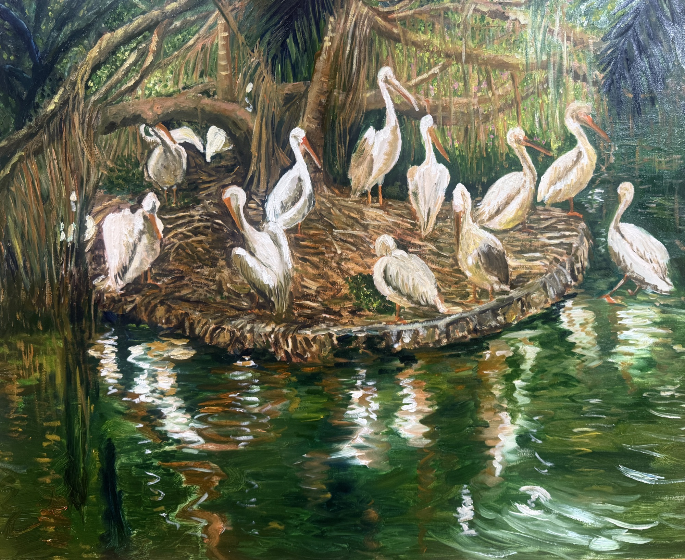

Waterside Whispers
水湄栖语

- Artwork ID / 作品编号
- KW-O-000012
- Year / 年份
- 2024
- Medium / 媒介
- Oil on canvas / 布面油画
- Dimensions / 尺寸
- 90 × 110 cm (H × W / 高 × 宽)
Sanctuary was completed in 2024. The painting portrays a group of pelicans resting on a small wetland island surrounded by lush vegetation and emerald water. Reflections, layered greens, and the quiet presence of the birds create a peaceful ecological landscape.Rather than presenting dramatic narratives, the work celebrates coexistence between wildlife and nature. Through expressive oil brushwork, it transforms an ordinary habitat into a meditation on ecological balance and the continuity of life.
《栖息之境》创作于2024年。作品描绘湿地岛屿上成群栖息的鹈鹕，在繁茂植被与碧绿水面的映衬下形成宁静而富有生命力的自然景观。画面通过丰富的绿色层次、水面倒影与鸟群姿态，呈现生态环境的稳定与和谐。作品关注人与自然共同生存的生态命题，并非强调戏剧性叙事，而是以平静的日常场景表达生命共同体的价值。油画厚实的笔触强化了植被、水体与羽毛的质感，使自然成为持续孕育生命的空间。